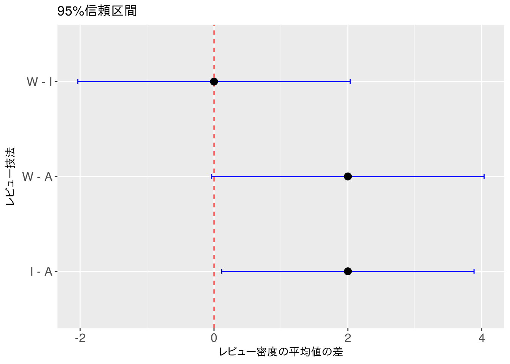
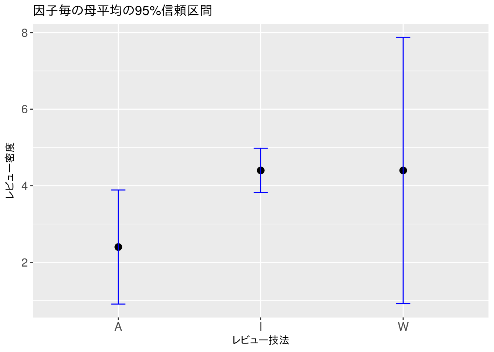
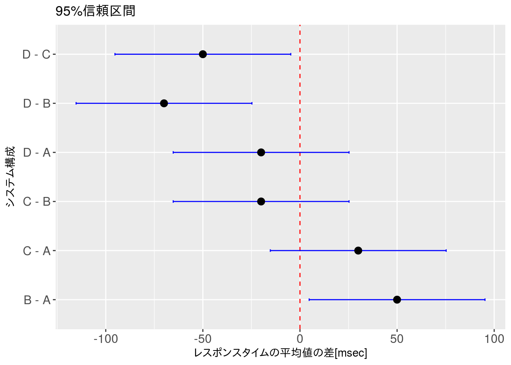
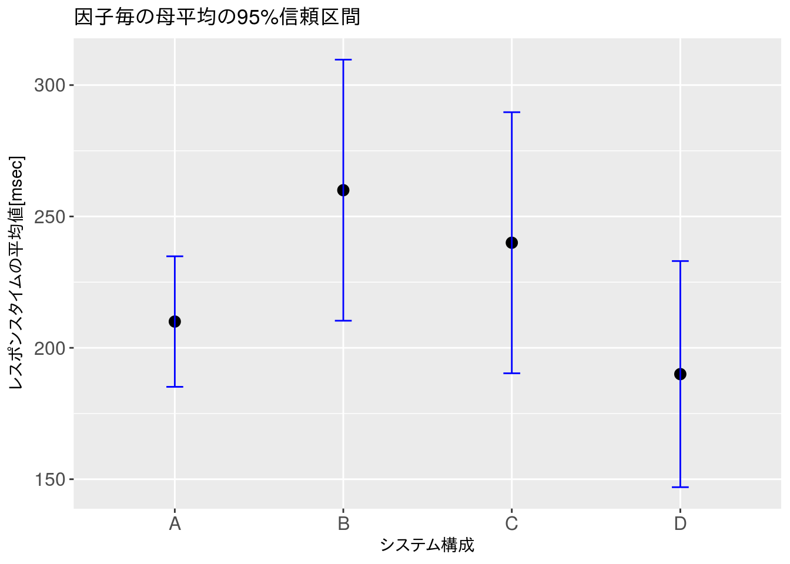

第3章 例題解答例
はじめに
本資料は『ソフトウェアメトリクス統計分析入門』(以降、テキストと記載)の第3章の例題をRで解いた際の解答例を示したものです。また、R Markdownを使うメリットを示すための一手段として作成していますので、テキストにおける計算方法とは異なる部分もあります。本資料で使用しているデータの入手に関してはテキストにてご確認下さい。
本資料がHTML形式の場合、Rのコードを参照するには右側にある[Code]ボタンをクリックして下さい。なお、JavaScriptは必ずOnにしてご覧下さい。
例題 3.1
表3.4にレビュー指摘による欠陥密度データが11 個あります。 データをそれぞれ適用したレビュー技法ごとに分類しています。 レビュー対象の品質を考慮して技法を使い分けすることは特にしていない前提とします。 レビュー技法の違いは、欠陥密度に対して影響を与えているといえるでしょうか。
データの設定
本例題で利用するデータは予めCSVファイルとして保存されているものとします。表3.4で示めされているようにデータはワイドフォーマット（アンスタック形式）で「対応なし・各群の標本数が異なる」データとなっています。 Rで処理するためには基本的にロングフォーマット（スタック形式）に変換する必要がありますので、予めロングフォーマットに変換しておくか、読み込んでからロングフォーマットに変換します。
フォーマット変換
データはすぐに分析できる形で保存されていることは稀です。これは、データ分析に慣れていない人が整理していたり、説明がしやすい形に整理されていることに起因します。しかし、これらのデータを手動で変換していると変換間違いが混入する可能性が高いので、できる限り自動化して間違いを防ぎたいものです。また、データ量が多い場合には工数削減に直結するので変換処理の自動化は覚えておいて損はありません。
Rにおいてフォーマット変換を行う方法はいくつかありますが、ここではtidyrパッケージを用いた方法を紹介します。なお、tidyrパッケージはdplyrパッケージと共に使うことを前提に設計されています。
データの準備
今回用いる表3.4は、見出し行を除いたデータだけのCSV形式として保存しておきます
| RM | 1 | 2 | 3 | 4 |
|---|---|---|---|---|
| A | 2.2 | 3.4 | 2.8 | 1.2 |
| I | 3.0 | 4.4 | 5.8 | |
| W | 4.6 | 4.2 | 4.0 | 4.8 |
- 上表は便宜上、列名（ヘッダ）を記載してありますが、今回は列名（ヘッダ）のないデータ形式としておきます
- 列名（ヘッダ）があっても基本的な処理は同じです
データの読み込みと変換
次に以下の手順でファイルを読み込み変換処理を行います。
- 1列目のレビュー技法（分類）は行名として読み込みます（列名は自動付与）
- 読み込んだデータフレームを転置します（行名が列名になります）
- データフレーム型に変換します（転置後はマトリクス型になるため）
- ロングフォーマットに変換します
- 分類の列を因子型に変換します（転置後は文字列型になるため）
- 使用しないNAデータを削除します
実際の処理手順は下記のCodeボタンをクリックしてコードを展開して確認してください。なお、データ数が多い場合はデータフレーム型と互換性のあるテーブル・ データフレーム型（tbl_df）に変換しておくと何かと便利です。
ロングフォーマットに変換したデータは以下のようになります。
# HTML出力またはコンソール出力の場合はインタラクティブなテーブル表示とする
x %>%
rename('レビュー技法' = review.method, '指摘密度' = defect.density) %>%
df_print(caption = "分析対象データ")x %>%
group_by(review.method) %>%
summarise(n = n()) %>%
rename('レビュー技法' = review.method, 'データ数' = n) %>%
df_print(caption = "各群のデータ数")| レビュー技法 | データ数 |
|---|---|
| A | 4 |
| I | 4 |
| W | 3 |
逆フォーマット変換
ロングフォーマットをワイドフォーマットに再変換したい場合は、再変換時に行識別ができるように以下のような行識別情報を持ったデータフレームを保持しておきます。
file <- "./data/ex_3.1_w.csv" # ワイドフォーマットで読み込む
x.l <- read.csv(file, header = FALSE, sep = ",", row.names = 1,
fileEncoding = "CP932") %>%
t() %>% # 転置行列の作成
tbl_df() %>% # データフレーム型への変更 as.data.frame() %>%
mutate(id = row_number()) %>%
# 行識別情報を付加する
tidyr::gather(key = review.method, value = defect.density, -id) %>%
# ロングフォーマットへの変換
mutate(review.method = as.factor(review.method))
# 因子型への変換
# HTML出力またはコンソール出力の場合はインタラクティブなテーブル表示とする
df_print(x.l, caption = "ロングフォーマット（スタック形式）")x.w <- x.l %>%
tidyr::spread(key = review.method, value = defect.density) %>%
dplyr::select(-id)
df_print(x.w, caption = "ワイドフォーマット（アンスタック形式）")| A | I | W |
|---|---|---|
| 2.2 | 4.6 | 3.0 |
| 3.4 | 4.2 | 4.4 |
| 2.8 | 4.0 | 5.8 |
| 1.2 | 4.8 | NA |
df_print(t(x.w), caption = "ワイドフォーマット（非推奨形式）")| 1 | 2 | 3 | 4 | |
|---|---|---|---|---|
| A | 2.2 | 3.4 | 2.8 | 1.2 |
| I | 4.6 | 4.2 | 4.0 | 4.8 |
| W | 3.0 | 4.4 | 5.8 | NA |
データ分布の確認
技法の違いが欠陥密度に与える影響を見るには分散分析aov{stats}を用いるのが適当であると考えられますが、分散分析は母集団の分布を以下のように仮定しています。
- 正規分布にしたがう
- 等分散である
今回は各群（水準）のデータ数が3～4個と少ないため、正規性についてはデータ数が増えれば正規分布になるという仮定の元、検定を省略します。等分散性については等分散が認められなければWelch検定を用いることにします。
等分散性の検定
今回は各群（水準）のデータ数が3～4個と少ないですが念のために等分散性の検定を行います。各群（水準）のデータ数は前述のように異なり、また、各値の対応はありませんので、3水準以上に対応できるバートレットの検定bartlett.test{stats}にて等分散性を確認します。
bartlett.test(defect.density ~ review.method, data = x)##
## Bartlett test of homogeneity of variances
##
## data: defect.density by review.method
## Bartlett's K-squared = 3.3812, df = 2, p-value = 0.1844一元配置分散分析
帰無仮説は棄却されませんでしたので、対象のデータは等分散性がないとは言えないため一元配置分散分析aov{stats}を用いて各群（水準）間の平均値の有意差の有無を確認します。
result.aov <- aov(defect.density ~ review.method, data = x)
summary(result.aov)## Df Sum Sq Mean Sq F value Pr(>F)
## review.method 2 10.18 5.091 5.852 0.0272 *
## Residuals 8 6.96 0.870
## ---
## Signif. codes: 0 '***' 0.001 '**' 0.01 '*' 0.05 '.' 0.1 ' ' 1多重比較
一元配置分散分析の結果、\(5\%\)有意で帰無仮説は棄却されましたので、どの各群（水準）間に有意差があるかを多重比較により確認します。対象は前述の通り対応がなく各群（水準）のデータ数が異なりますので、多重比較としていくつかの検定方法がありますが、ここでは、Rcmdrで使われているテューキー・クレーマー法による多重比較を行います。
# Rcmdr
result.pairs <- multcomp::glht(result.aov,
linfct = multcomp::mcp(review.method = "Tukey"))
summary(result.pairs)##
## Simultaneous Tests for General Linear Hypotheses
##
## Multiple Comparisons of Means: Tukey Contrasts
##
##
## Fit: aov(formula = defect.density ~ review.method, data = x)
##
## Linear Hypotheses:
## Estimate Std. Error t value Pr(>|t|)
## I - A == 0 2.0000 0.6595 3.032 0.0389 *
## W - A == 0 2.0000 0.7124 2.807 0.0540 .
## W - I == 0 0.0000 0.7124 0.000 1.0000
## ---
## Signif. codes: 0 '***' 0.001 '**' 0.01 '*' 0.05 '.' 0.1 ' ' 1
## (Adjusted p values reported -- single-step method)# TukeyHSD
result.tukey <- TukeyHSD(result.aov)
result.tukey## Tukey multiple comparisons of means
## 95% family-wise confidence level
##
## Fit: aov(formula = defect.density ~ review.method, data = x)
##
## $review.method
## diff lwr upr p adj
## I-A 2 0.11538605 3.884614 0.0386871
## W-A 2 -0.03561572 4.035616 0.0538138
## W-I 0 -2.03561572 2.035616 1.0000000多重比較の結果、I(インスペクション)とA(アドホック)において有意差が認められます。
結果の可視化
因子間の平均の差の95%信頼区間は以下の通りとなります。
# Rcmdrにおける多重比較を行った場合
x.result <- as.data.frame(confint(result.pairs)$confint) %>%
mutate(review.method = as.factor(row.names(.))) %>%
select(factor = review.method, lo = lwr, mu = Estimate, up = upr)
# TukeyHSDを使用した場合
# x.result <- as.data.frame(result.tukey$review.method) %>%
# mutate(review.method = as.factor(row.names(.))) %>%
# select(factor = review.method, lo = lwr, mu = diff, up = upr)
ggplot(x.result, aes(x = factor, y = mu)) +
geom_hline(yintercept = 0, linetype = "dashed", colour = "red") +
geom_errorbar(aes(ymin = lo, ymax = up), width = 0.05, colour = "blue") +
geom_point(size = 3) +
xlab("レビュー技法") + ylab("レビュー密度の平均値の差") +
theme(axis.text = element_text(size = 12)) +
ggtitle("95%信頼区間") +
coord_flip()
各群の平均値の95%信頼区間
n <- 2
x.result <- x %>%
group_by(review.method) %>%
summarize(lo = round(t.test(defect.density)$conf.int[1], n),
mu = round(t.test(defect.density)$estimate, n),
up = round(t.test(defect.density)$conf.int[2], n),
num = n())
ggplot(x.result, aes(x = review.method, y = mu)) +
geom_point(size = 3) +
geom_errorbar(aes(ymin = lo, ymax = up), width = 0.1, colour = "blue") +
xlab("レビュー技法") + ylab("レビュー密度") +
theme(axis.text = element_text(size = 12)) +
ggtitle("因子毎の母平均の95%信頼区間")
例題 3.2
システム構成の違いがシステムのパフォーマンスにどの程度の影響を与えるのかを調べるために以下のようなデータを収集し、一元配置分散分析を行いました。 システム構成の違いがパフォーマンスに与える影響力は誤差範囲ではないといえるでしょうか。
データの設定
本例題で利用するデータは予めCSVファイルとして保存されているものとします。なお、例題3.1で示したように例題3.2でもフォーマット変換により分析対象となるデータフレームを作成しています。
# 例題のデータを変形せずに読み込み、分析用データフレームに変換する
file <- "./data/ex_3.2.csv"
x <- read.csv(file, header = FALSE, row.names = 1, sep = ",",
fileEncoding = "CP932") %>%
# システム構成の列を行名に設定して転置するのがポイント
t() %>%
as.data.frame() %>%
tidyr::gather(key = sys.config, value = r.time) %>%
mutate(sys.config = as.factor(sys.config))
# mcp{multcomp}では因子型である必要があるため文字列型から変換
df_print(x)データ分布の確認
例題3.1と同じで分散分析aov{stats}を用いるのが適当だと考えますが、念のためにデータ分布の確認を行います。正規性の検定については例題3.1と同じ理由から省略します。
等分散性の確認
bartlett.test(r.time ~ sys.config, data = x)##
## Bartlett test of homogeneity of variances
##
## data: r.time by sys.config
## Bartlett's K-squared = 0.86607, df = 3, p-value = 0.8336一元配置分散分析
帰無仮説は棄却されませんでしたので、対象データは等分散性がないとはいえないために一元配置分散分析aov{stats}を用いて各群（水準）間の平均値の有意差の有無を確認します。
result.aov <- aov(r.time ~ sys.config, data = x)
summary(result.aov)## Df Sum Sq Mean Sq F value Pr(>F)
## sys.config 3 8700 2900 9.667 0.00489 **
## Residuals 8 2400 300
## ---
## Signif. codes: 0 '***' 0.001 '**' 0.01 '*' 0.05 '.' 0.1 ' ' 1多重比較
一元配置分散分析の結果、\(5\%\)有意で帰無仮説は棄却されましたので、多重比較により各群（水準）間に有意差があるのかを確認します。ここでもRcmdrで使われているティキュー・クレーマー法を用います。
# Rcmdr
result.pairs <- multcomp::glht(result.aov,
linfct = multcomp::mcp(sys.config = "Tukey"))
summary(result.pairs)##
## Simultaneous Tests for General Linear Hypotheses
##
## Multiple Comparisons of Means: Tukey Contrasts
##
##
## Fit: aov(formula = r.time ~ sys.config, data = x)
##
## Linear Hypotheses:
## Estimate Std. Error t value Pr(>|t|)
## B - A == 0 50.00 14.14 3.536 0.0315 *
## C - A == 0 30.00 14.14 2.121 0.2254
## D - A == 0 -20.00 14.14 -1.414 0.5253
## C - B == 0 -20.00 14.14 -1.414 0.5253
## D - B == 0 -70.00 14.14 -4.950 0.0048 **
## D - C == 0 -50.00 14.14 -3.536 0.0315 *
## ---
## Signif. codes: 0 '***' 0.001 '**' 0.01 '*' 0.05 '.' 0.1 ' ' 1
## (Adjusted p values reported -- single-step method)# TukeyHSD
result.tukey <- TukeyHSD(result.aov)
result.tukey## Tukey multiple comparisons of means
## 95% family-wise confidence level
##
## Fit: aov(formula = r.time ~ sys.config, data = x)
##
## $sys.config
## diff lwr upr p adj
## B-A 50 4.711904 95.288096 0.0313874
## C-A 30 -15.288096 75.288096 0.2252476
## D-A -20 -65.288096 25.288096 0.5252407
## C-B -20 -65.288096 25.288096 0.5252407
## D-B -70 -115.288096 -24.711904 0.0049175
## D-C -50 -95.288096 -4.711904 0.0313874多重比較の結果、システム構成A-B間、システム構成B-D間、システム構成C-D間に有意差が認められます。
結果の可視化
因子間の平均の差の95%信頼区間は以下の通りとなります。
x.result <- as.data.frame(confint(result.pairs)$confint) %>%
mutate(sys.config = as.factor(row.names(.))) %>%
select(factor = sys.config, lo = lwr, mu = Estimate, up = upr)
ggplot(x.result, aes(x = factor, y = mu)) +
geom_hline(yintercept = 0, linetype = "dashed", colour = "red") +
geom_errorbar(aes(ymin = lo, ymax = up), width = 0.05, colour = "blue") +
geom_point(size = 3) +
xlab("システム構成") + ylab("レスポンスタイムの平均値の差[msec]") +
theme(axis.text = element_text(size = 12)) +
ggtitle("95%信頼区間") +
coord_flip()
この結果から
- システム構成Aはシステム構成B,Cに比べてレスポンスタイムの平均値が低い
- システム構成Aはシステム構成Dに比べてレスポンスタイムの平均値が高い
- システム構成Dはシステム構成A,B,Cに比べてレスポンスタイムの平均値が低い
となります。単純にレスポンスタイムの平均値だけで決めるのであればシステム構成Dを選択すればよいことになります。しかし、システム構成AとDの平均値の差の95%信頼区間を確認すると必ずもシステム構成Dのレスポンスタイムが短いとは言い切れません。
各群の平均値の95%信頼区間
そこで、各システム構成の平均値の95%信頼区間を確認してみます。
n <- 2
x.result <- x %>%
group_by(sys.config) %>%
summarize(lo = round(t.test(r.time)$conf.int[1], n),
mu = round(t.test(r.time)$estimate, n),
up = round(t.test(r.time)$conf.int[2], n),
num = n())
ggplot(x.result, aes(x = sys.config, y = mu)) +
geom_point(size = 3) +
geom_errorbar(aes(ymin = lo, ymax = up), width = 0.1, colour = "blue") +
xlab("システム構成") + ylab("レスポンスタイムの平均値[msec]") +
theme(axis.text = element_text(size = 12)) +
ggtitle("因子毎の母平均の95%信頼区間")
平均値でみるとシステム構成Dの方がレスポンスタイムが短いですが、95%信頼区間を見るとシステム構成Aの方が狭くレスポンスタイムにばらつきがありません。これより
- 安定したレスポンスタイムが求められる場合はシステム構成A
- 全体として短いレスポンスタイムが求められる場合はシステム構成D
という選択ができると考えます。
付録
等分散（性）の検定
分散分析は母集団が正規分布で等分散であることを仮定としています。そこで、事前検定として正規性の検定や等分散（性）の検定を行います。正規性の検定については、ここでの説明は省略します。 Rcmdrで利用できるF検定（分散比の検定）var.test{stats}は2群（水準）に対する検定ですので、3群（水準）以上を対象にする場合は以下の検定を用います。なお、帰無仮説は全て「各群（水準）の分散はすべて等しい」です。
| 検定方法 | 正規性 | 標本数 | Rcmdr | 備考 |
|---|---|---|---|---|
| バートレット | 要 | 同/異 | あり | |
| ルービン | 不要 | 同/異 | あり | |
| ハートレイ | ？ | 同 | なし |
分散分析
分散分析の帰無仮説は「各群（水準）の平均値は等しい」ですが、注意する点として対立仮説が「各群の組み合わせの少なくとも一組に平均値の差がある」となることです。分散分析だけでは、どの群間に有意差があるかまではわかりません。なお、検定対象データが等分散でない場合はウェルチ検定を用います。
| 検定方法 | 正規性 | 等分散 | Rcmdr | 備考 |
|---|---|---|---|---|
| 分散分析(aov) | 要 | 要 | あり | aov{stats}, oneway.test{stats}1 |
| ウェルチ | 要 | 不要 | あり2 | oneway.test{stats}1 |
1 オプション指定により等分散、不等分散のどちらもにも対応します
2 Rcmdr 2.3-0以降であれば実行可能です
多重比較
一元配置分散分析は前述のように因子の差（各群（水準）の平均値の差）の有無について検定するだけですので、各群（水準）間のどこに有意差があるかを見るためには事後検定（下位検定）として多重比較が必要です。事後検定はデータにより検定方法が分かれますので注意が必要です。
| 検定方法 | 標本数 | 対応3 | 備考 |
|---|---|---|---|
| テューキー | 同 | なし | TukeyHSD{stats} |
| テューキー・クレーマー | 異 | なし | TukeyHSD{stats} |
| ボンフェローニ | 同 | あり/なし | 5水準以下が目安, pairwise.t.test{stats}4 |
| ホルム | 同 | あり/なし | pairwise.t.test{stats}4 |
| 一般線形モデル | 同/異 | なし | Rcmdr, gmlh{multcomp}5 |
4 オプション指定によりボンフェローニ、ホルムのどちらも対応します
3 「対応」とは各群のデータが同一人物による回答や測定であるような場合で、具体例は参考文献で確認してください
5 オプションでテューキー法が指定されていて、結果を見る限りTukeyHSD{stats}と同等のようです